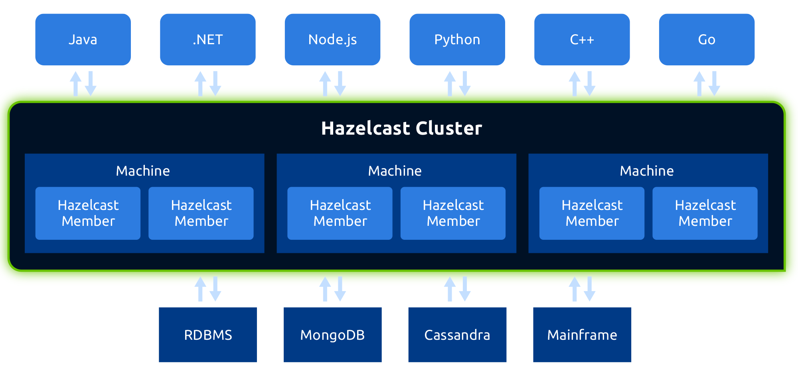

Hazelcast: The Journey from Cache to Cloud-native
Grzegorz Piwowarek
@pivovarit

{ 4comprehension.com }
Lead Architect @ Hazelcast
Trainer @ Bottega IT Minds
@pivovarit
Born in 2008 in Turkey as a simple caching solution...
source: Hazelcast
The Hazelcast IMDG is an operational in-memory computing platform that manages data and distributes processing using memory and parallel execution for breakthrough application speed and scale.

source: Hazelcast
source: Hazelcast
IMDG
In-Memory Data Grid
source: Hazelcast
Cache Access Patterns
Read-through
source: Hazelcast
Write-through

source: Hazelcast
Write-behind

source: Hazelcast
Near Cache

source: Hazelcast
Cloud/Containers/Kubernetes changed the rules of the game
Config as environment variables
Polyglot-first
Hazelcast Jet Whitepaper
https://arxiv.org/abs/2103.10169
Performance of Modern Java on Data-Heavy Workloads: Real-Time Streaming
Processing 10M queries / second on a single node using Jet and gRPC
Hazelcast Jet Design Documents
https://jet-start.sh/docs/design-docs/
Hazelcast Jet Architecture
https://jet-start.sh/docs/architecture/distributed-computing
Real-time Streaming Ideas
https://github.com/hazelcast/hazelcast-jet-demos
source: Hazelcast
Hazelcast Viridian
https://viridian.hazelcast.com
Hazelcast Viridian
IMap Change-Data-Capture
Tiered Storage
Next Generation (bleeding-edge)
Thank You!
Q/A time!
https://pivovarit.github.io/talks/hazelcast-future
Twitter: @pivovarit